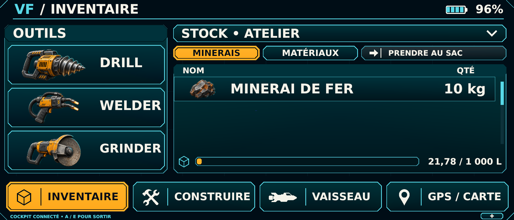

Réussi · 55 contrôles
Rapport completStocks distincts, minerais finis, transferts, raffinage, assemblage, construction et sauvegarde. Les cinq menus ci-dessous rendent les données du moteur d’économie pendant les contrôles Unity ; la vue du Cyberdeck provient du Play de Main. La recette sur casque est distincte.
Procédure de jeu et limites · Catalogue graphique de référence

Réussi · 55 contrôles
Rapport completRéussi · 27 contrôles
Rapport completRéussi · 10 contrôles
Rapport complet